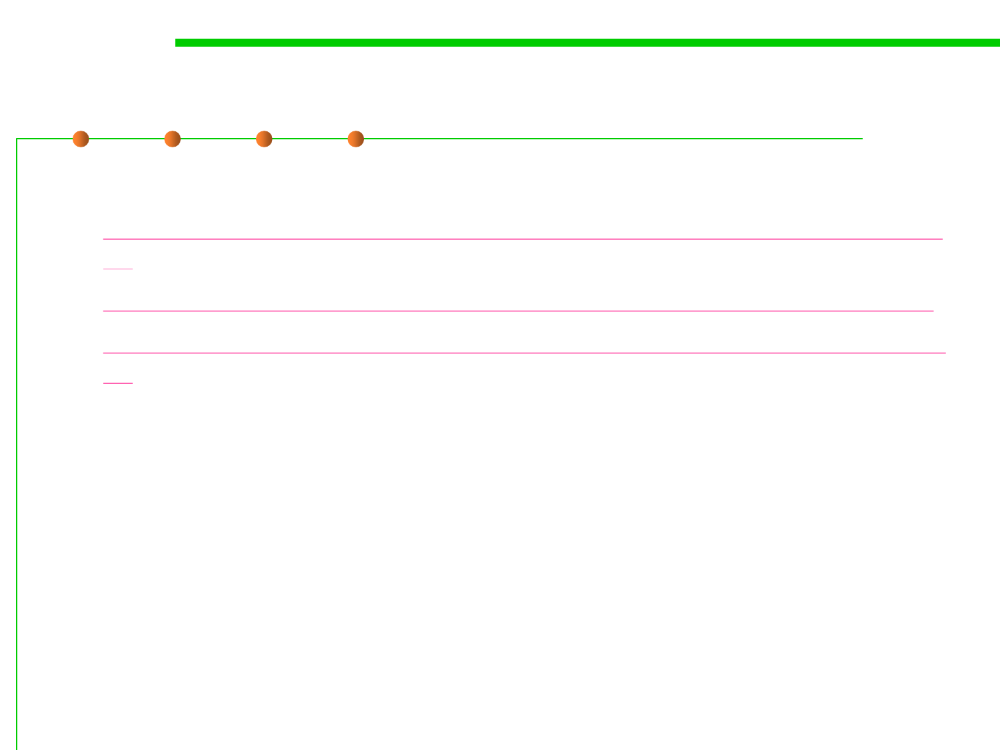

Java make
2.2 Process, Systems, and Tools of Software Construction
▪ Use Make and makefile to build Java projects
– https://www.cs.swarthmore.edu/~newhall/unixhelp/howto_makefiles.ht
ml
– https://www.cs.swarthmore.edu/~newhall/unixhelp/javamakefiles.html
– http://www.cnblogs.com/jiqingwu/archive/2012/06/13/java_makefile.ht
ml
▪ Commands:
– # make new
To generate sub-directories (src, bin, res)
– # make build
To compile and generate java classes in bin
– # make clean
Clean the compilation results
– # make rebuild
Clean the compilation results and re-complie
(clean + build)
– # make run
To check the execution results
– # make jar
To generate executable jar files